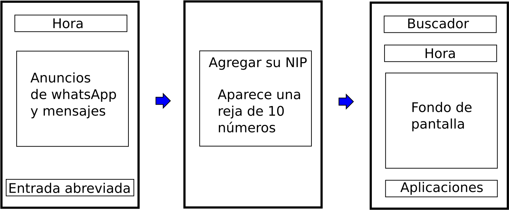

Objetivo
Usar la herencia para construír superclases con subclases de manera jerarquica.
Actividades
Se presenta la siguiente carátula de un celular. Usando herencia, replicarla de manera gráfica.

Actividad 1. Crear un contenedor por medio de un Frame.
Actividad 2. Crear los botones y campos de datos.
Actividad 3. Colocar los botones y campos de datos dentro del contenedor.
Actividad 4. Presentar el programa completo que despliegue la caratula solicitada.
Actividad 5. Preeeesentar el digrama de clases de todo el programa de la carátula.
Cuestionario
Pregunta 1. Presente un diagrama de clase para cada una de las clases que se utilizan. Y explicar su función.
Pregunta 2. Basado en el diagrama de clases completo, explicar la jerarquía de clases.